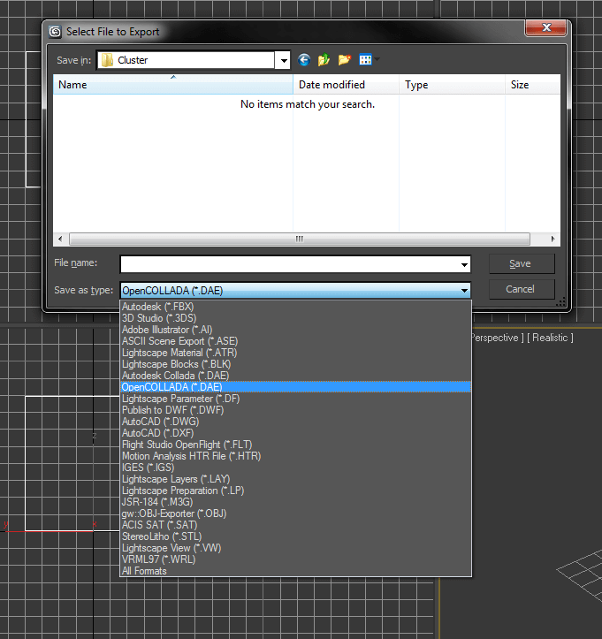

Exporting from 3D Studio Max
Exporting OpenCOLLADA from 3D Studio Max
Select the object to be exported. Next, open the Export dialog box.

Be sure to select OpenCOLLADA and not Autodesk Collada.
Next, you will be prompted with another set of options for the OpenCOLLADA exporter.

Make sure that the triangulate option is checked.